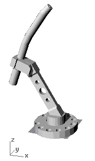
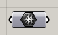
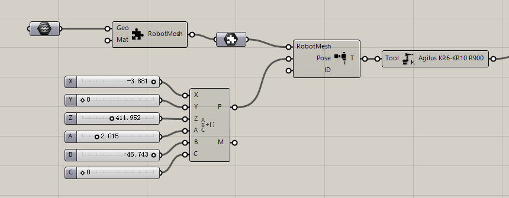
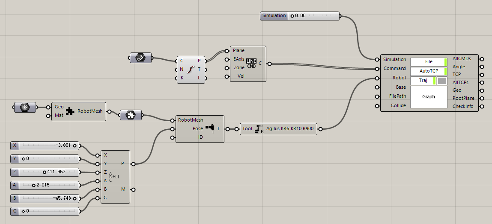
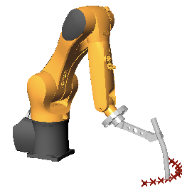
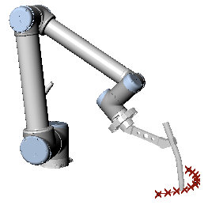
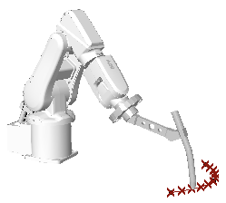

5. Customize Tool¶
Note
Document of this tutorial is CustomTool.3dm , customTool . gh | Downlaod in Github
Most time,the default tool in toolbar cannot meet our request,so we need to customize tool. For example by KUKA,we can use 4-points method and 2-points method to get the parameter of tool,namely XYZABC. The detail operation of 4-points method and 2-points method will not be introduced here,you can search them in internet. By previous operations,we can get XYZABC parameter in robot pad,then we input them to custom tool component:
5.1. Load tool model¶
In Rhino,load the finished mesh model(in CustomTool.3dm),make sure that the flange plane of tool is align to world plane.
Take a mesh component,pick up this tool model:
Create a Custom tool component,and connect the previous components:
5.2. Customize tool¶
Then a custom tool is finished,you can replace the tool of Getting Started with this custom tool:
 Keep the XYZABC parameter,the newly done tool can also be used for ABB and UR robots.
 Note
If the tool parameter is from UR robot,then you should use URToolDataToXYZABC for convertion（ABB is similar）: